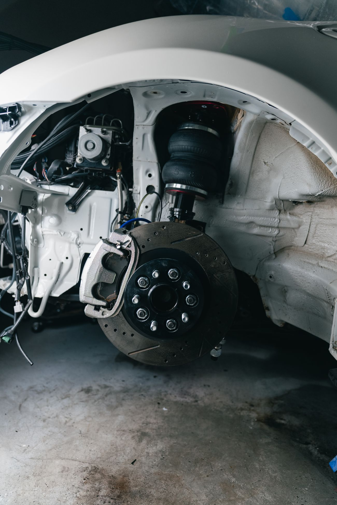

Койловеры
Ремонт стоек с газонаполнением, в том числе TEIN, CUSKO, HKS, KTS и т.п.
цена уточняетсяВыберите работу, укажите машину и что беспокоит — заявка с удобным временем уйдёт мастеру. Без звонка в рабочие часы.

Фото — иллюстрация (Pexels), не работа сервиса
Работаете только по записи, но записаться можно лишь звонком. Сайт 2021 года на телефоне мелкий, цен нет, а пункт «Контакты» ведёт на страницу 404.
Работа, ось, симптомы и удобный час — одной заявкой с телефона, в том числе вечером, когда сервис закрыт.
Предлагает только часы в графике пн–пт 10–19 по новосибирскому времени и отправляет заявку мастеру в Telegram.
✦Это концепт. С вашими фото и правками будет ещё лучше
Список — с текущего сайта. Цены на сайте не опубликованы — уточняются.
Ремонт стоек с газонаполнением, в том числе TEIN, CUSKO, HKS, KTS и т.п.
цена уточняетсяРемонт стоек и амортизаторов автомобилей иностранных марок.
цена уточняетсяРемонт ходовой части и техническое обслуживание.
цена уточняетсяФормулировки — с текущего сайта.
На выполненные работы — гарантия качества.
Так указано на сайте (последний год на сайте — 2021).
«Мы индивидуально рассмотрим Ваш случай, примем все необходимые меры, чтобы исправить ситуацию».
На текущем сайте фото работ нет. Фото «до/после» уточняются — добавим ваши.
Цитата — дословно с Яндекс Карт, без имени.
«Позвонил за час до заезда в бокс, приехал на замену задних стоек, цена более чем устроила с учетом срочности работы, поменяли за 40 минут, остался доволен работой и отношением, приеду еще.»Отзыв с Яндекс Карт
Ответов владельца на отзывы сейчас нет. В рабочей версии заявка с подтверждённым временем помогает избежать накладок с записью.
Свободные часы — в графике пн–пт 10:00–19:00 (новосибирское время). Часы работы уточняются: в справочниках встречается 12:00–19:00.
Почта: avtoservis.bagi@mail.ru. Работаем по предварительной записи.